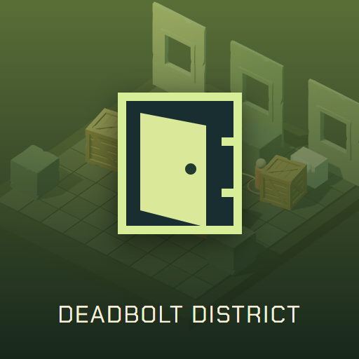

<- all projects

Deadbolt District
PC
Volume
Live
Steal the evidence. Read the patrols. Choose who gets out.
The city sold your neighborhood, so steal its secrets back. Deadbolt District is a turn-based stealth game on a 7x7 grid. Choose a specialist and one gadget, read where every patrol steps next and plan a route to the locked evidence and back out to the exit, deciding whether to risk rescuing a resident. Get spotted and you lose resolve. There are 24 contracts across four districts, five specialists and 18 gadgets, with heat and injuries carrying between jobs and a rescue record that leads to one of three endings, plus a daily challenge and an endless contract ladder.